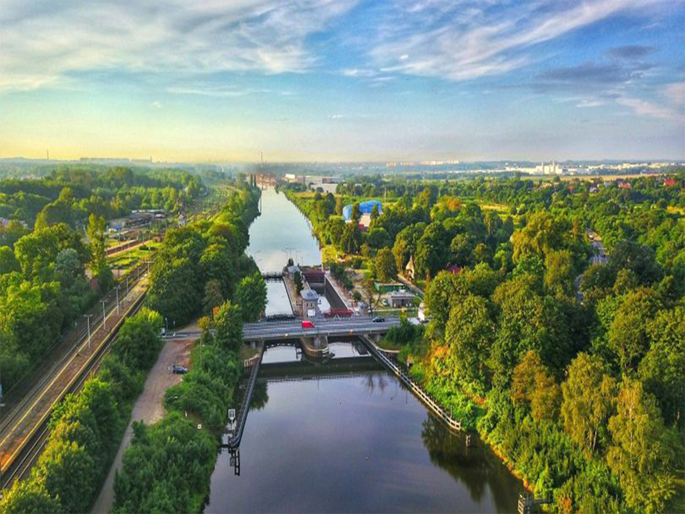
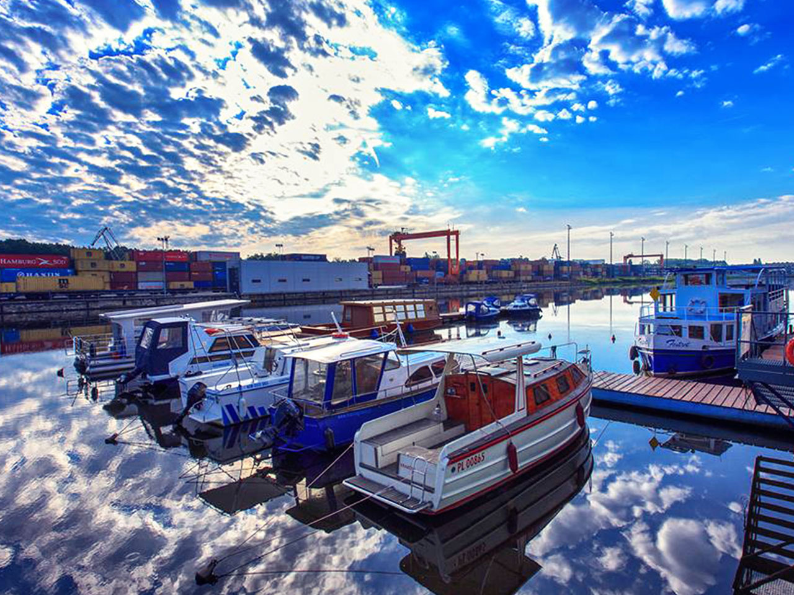

Marina Gliwice, przystań turystyczna ulokowana w Porcie Gliwice na Kanale Gliwickim. To stąd odbywają się rejsy statkiem pasażerskim Foxtrot, działa tu wypożyczalnia łodzi motorowych i kajaków. Dzięki naszej pasji rozwija się w Gliwicach turystyka wodniacka, a Kanał Gliwicki staje się celem wypraw nie tylko osób z okolicy, ale także z całej Polski, a nawet ze Świata. 26 maja 2016 przypłynęła do nas łódź ze Szwajcarii dając dowód na to, że jesteśmy częścia europejskiej sieci dróg wodnych. Z Gliwic można dopłynąć do Amsterdamu, Paryża, a nawet do Marsylii.
Marina Gliwice


Przykładowy cennik wynajmu łodzi
| Typ łodzi | Silnik | Patent | Ilosc osob | 1h |
|---|---|---|---|---|
| Romana 420/Jazz | Seaking 9,9km | nie | 4 | 120zł |
| Romana 420/Rock | Seaking 15km | tak | 4 | 120zł |
| Romana 420/Folk | Suzuki 9,9km | nie | 4 | 120zł |
| Romana 420/Blues | Suzuki 20km | tak | 4 | 120zł |